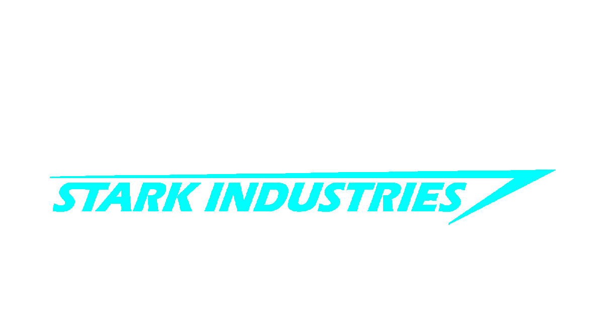

<div>
  <mat-toolbar class="navtoolbar" layout-align="center center">
    <div fxShow="true" fxHide.gt-sm="true">
      <!-- <a (click)="sidenav.toggle()">
        
      </a> -->
    </div>
    <div>
      <a [routerLink]="['/home']" routerLinkActive>
        <!--      -->
        

      </a>
    </div>
    <div fxShow="true" fxHide.lt-md="true">
      <!-- The following menu items will be hidden on both SM and XS screen sizes -->
      <a [routerLink]="['/home']" routerLinkActive mat-button>Home</a>
      <a [routerLink]="['/careers']" routerLinkActive mat-button>Careers</a>
      <a [routerLink]="['/contact']" routerLinkActive mat-button>Contact</a>
    </div>
    <span class="spaceFiller"></span>
    <div fxShow="true" fxHide.lt-md="true">
      <a *ngIf="isAuth()" [routerLink]="['/']" mat-button>Hello, {{loggedUser}}</a>
      <a *ngIf="isAuth()" (click)="logout()" [routerLink]="['/']" routerLinkActive mat-button>Logout</a>
      <a *ngIf="!isAuth()" [routerLink]="['/auth/login']" routerLinkActive mat-button>Login</a>
      <a *ngIf="!isAuth()" [routerLink]="['/auth/register']" routerLinkActive mat-button>Register</a>
    </div>
  </mat-toolbar>
  <!-- 
  <mat-sidenav-container fxFlexFill class="example-container" style="z-index: 9999;">
    <mat-sidenav #sidenav fxLayout="column">
      <span class="spaceFillerSide"></span>
      <div fxLayout="column">
        <a href="#" mat-raised-button>Home</a>
        <a href="#" mat-raised-button>Careers</a>
        <a href="#" mat-raised-button>Contact</a>
      </div>
      <span class="spaceFillerSide"></span>
      <div fxLayout="column">
        <a href="#" mat-raised-button>Login</a>
        <a href="#" mat-raised-button>Register</a>
      </div>
      <span class="spaceFillerSide"></span>
      <div fxLayout="column">
        <a (click)="sidenav.toggle()" mat-raised-button>Close Sidebar</a>
      </div>
    </mat-sidenav>
    <mat-sidenav-content fxFlexFill></mat-sidenav-content>
  </mat-sidenav-container> -->
</div>
